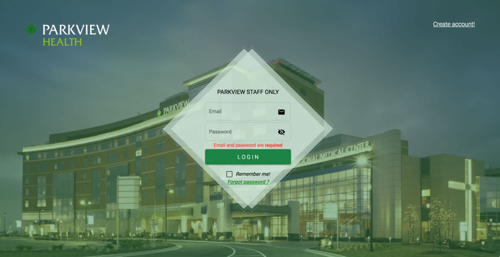
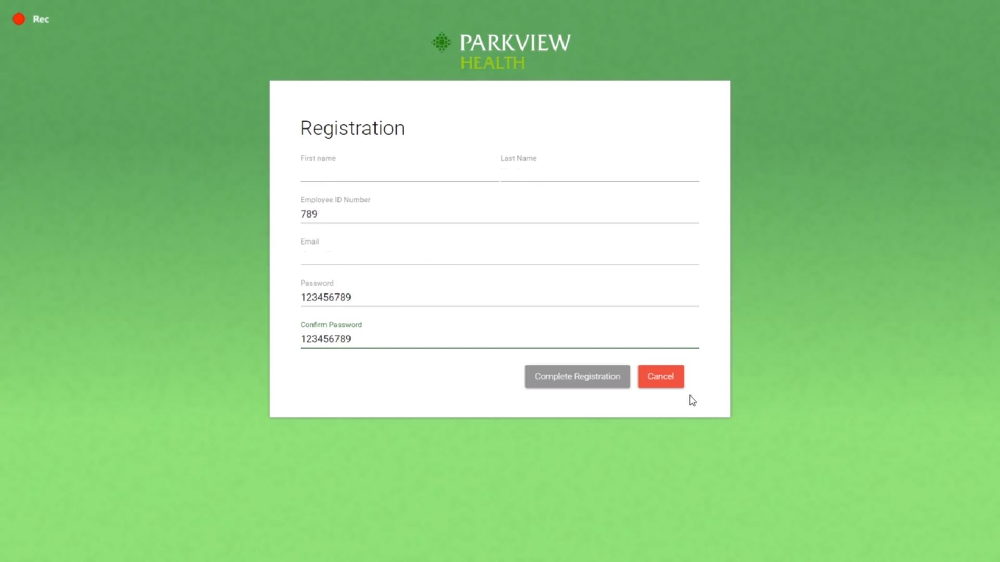
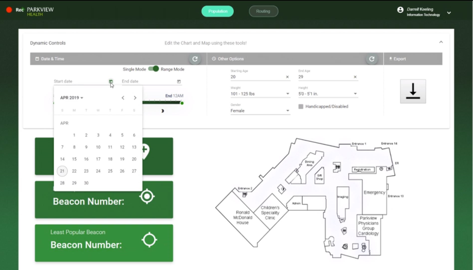
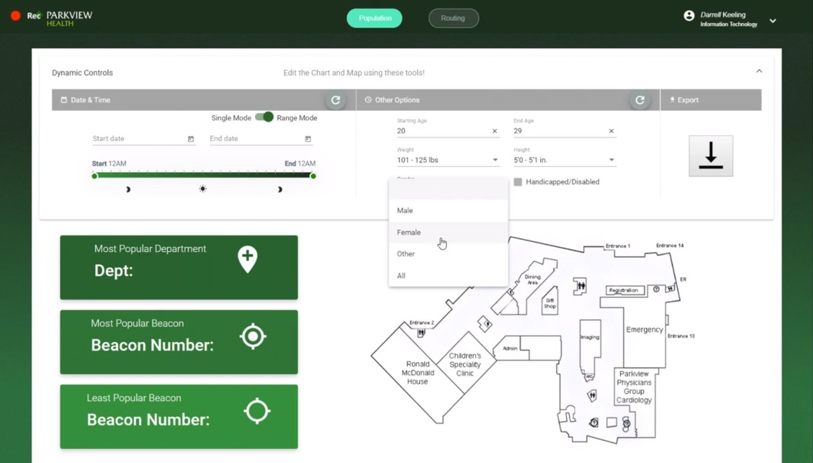
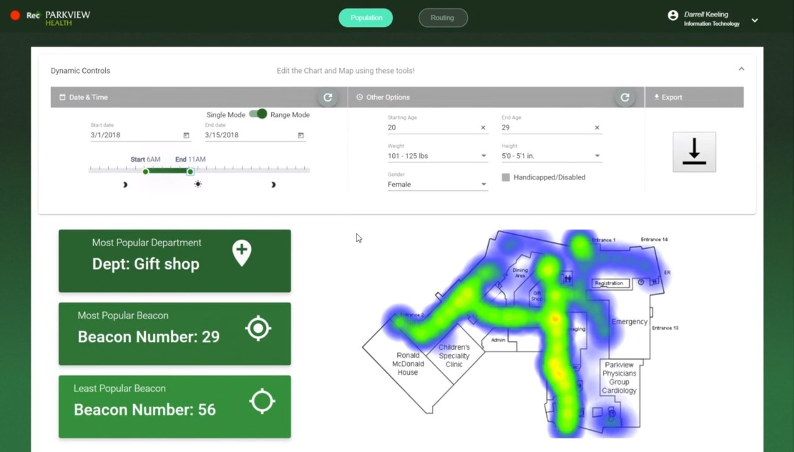
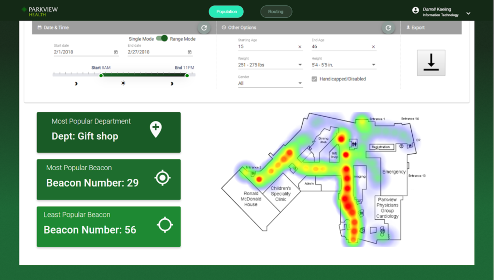
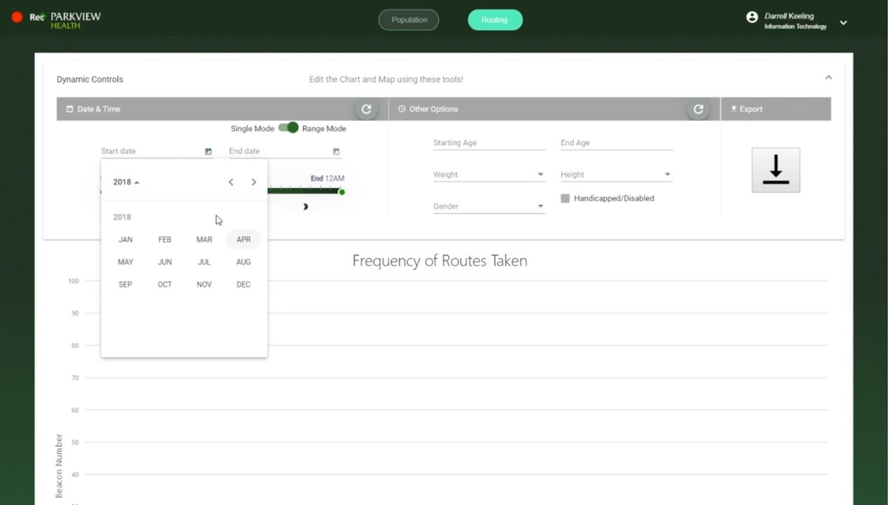
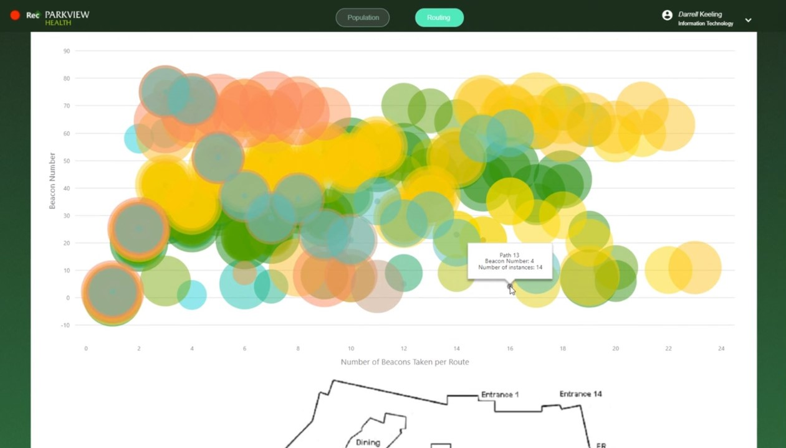

Improved accessibility for people with disabilities
This web application analyzes and presents collected data in a heatmap and a chart of frequent routes to read routing
patterns and to optimize space utilization for people with disabilities.
During my senior year, I worked in a funded project sponsored by Parkview Health System, Inc. concerning indoor
navigation and visual analytics. This project was awarded to the Purdue FW CS Dept. Senior Capstone Design Award 2019 for the second prize.
Source Code
Methods
Mobile Wayfinding system
Data Analytics & Data Visualization
Team
2 Web Front-end develpers (Nicholas, Haemin), 2 Web Back-end developers (Zarni, Min), and 1 mobile app developer (Micheal)
My Responsiblities
Front-end Development Lead
UX/UI Design
Data Analytics
Remote Beacon Control
How might we use the user information and collected navigation data
by the becons in the hospital to help guide patients?
Background
The primary purpose of this project is to improve upon the previous generation of the Indoor
Navigation Mobile Application that was created for the Parkview Regional Medical Campus (PRMC) in Fort Wayne,
Indiana. Parkview hospital could understand routing patterns with the framework and optimize space utilization for people
with disabilities.
PRMC is investing in improving the patient experience and is a leading institution in the
medical industry. The project
aims to leverage new technologies which focused on the patient experience to keep PRMC ahead of
the competitors.
The application uses Bluetooth low energy to power the real-time application positioning
functionality, creating an easy-to-understand navigation system.
Problem Statement
- Information (The user data and navigation data in the hospital) in the database currently is not used.
- How can we help guide patients efficiently?
Solution
The web application provides analyzed data to administrative staff in a comprehensive manner, and allows the data to be manipulated or
viewed in a variety of formats.
For example, Parkview employees can use a web application to determine the most populated time and by which age group or
gender. This effect would allow for an in-depth look at particular patient demographics, giving Parkview Health the
tools to improve its services.
My Role
I created a web application that analyzes and presents created data in a heatmap and a chart of
frequent routes for Parkview Hospital's Utilization. As a designer for this web analytics tool
development project, I managed the product design process from sketch to actual production build with considering user
experiences. As a front-end developer, I built a web controller interface that visualizes interactive data analytics using Angular 7, TypeScript, and HTML/CSS/JavaScript. Additionally, I designed and developed the Parkview Health employee administration
management systems for the analytics tool including user sign in page, sign up page, sign out page, and update information page.
Tech Stack
UI Design and Prototyping - InVision, Sketch
Front-end Development - Angular 7 (7.0.6), TypeScript, HTML, CSS, JavaScript
Back-end Development - NodeJS, express (MEAN stack)
Database Management - MySQL
Data Visualization - Heatmap.js
Mobile App Development - Android, Java
Beacon Control - Maridian, aruba beacons
Registration
Sign up & Sign in
This registration pages are essential to manage/keep the security of the patients' data.


Population
Heatmap.js
>




Routing
Routing map


Project Aspirations
This iteration of the project will focus on three key features web development, targeted advertisements, and improved
mobile application navigation. These include web development utilizing data and business analytics, targeted
advertisements that will promote Parkview technologies, and improved mobile application navigation to assisted disabled
patients. Each feature serves to enhance PRMC's quality of service, revenue generation, and modern appeal.